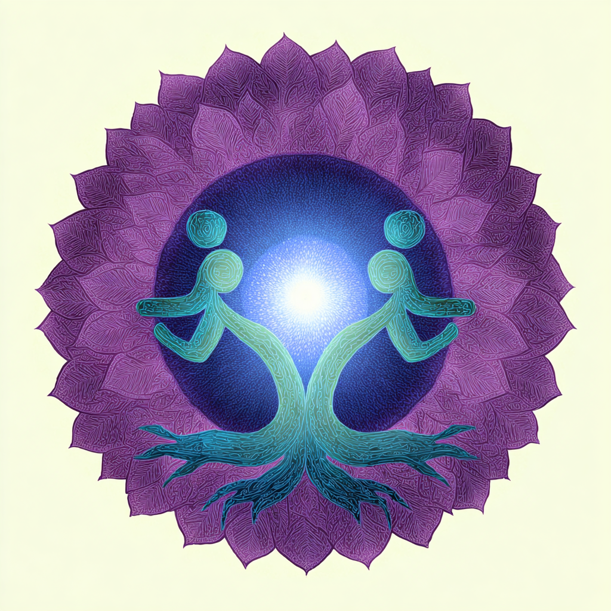
Ein besonderes Wochenende der Selbsterfahrung und Heilung
Wir laden dich herzlich ein zu einem intensiven, inspirierenden Wochenende voller Selbsterfahrung, innerer Arbeit und Heilung, geleitet von Chaitanya, einem erfahrenen und einfühlsamen Aufsteller mit langjähriger Praxis und tiefer Intuition.
Durch das Systemstellen können wir erkennen, warum etwas ins Stocken gerät, wo Blockaden entstehen und wie sich hindernde Verhaltensmuster lösen lassen. Diese Methode hilft dabei, den Blick auf das Wesentliche zu richten und direkt zur Ursache – zur Wurzel – vorzudringen.
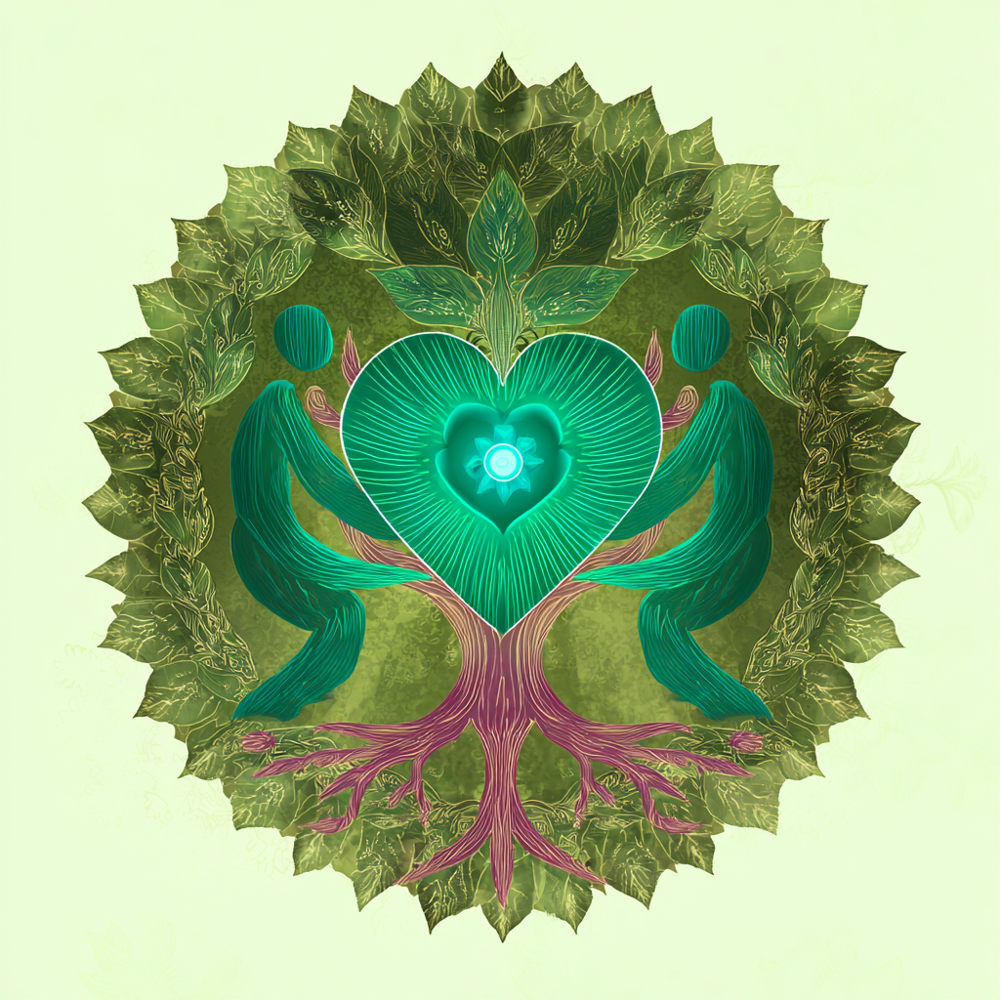
Was dich erwartet
Dieses Wochenende bietet dir die Gelegenheit, zu dir selbst zu kommen, Yoga zu praktizieren und mit verschiedenen inneren Übungen zu arbeiten. Tauche in die transformative Kraft der Familienaufstellung ein, löse alte Muster und spüre, wie sich Leichtigkeit und tiefes Verständnis für dein Leben entfalten.
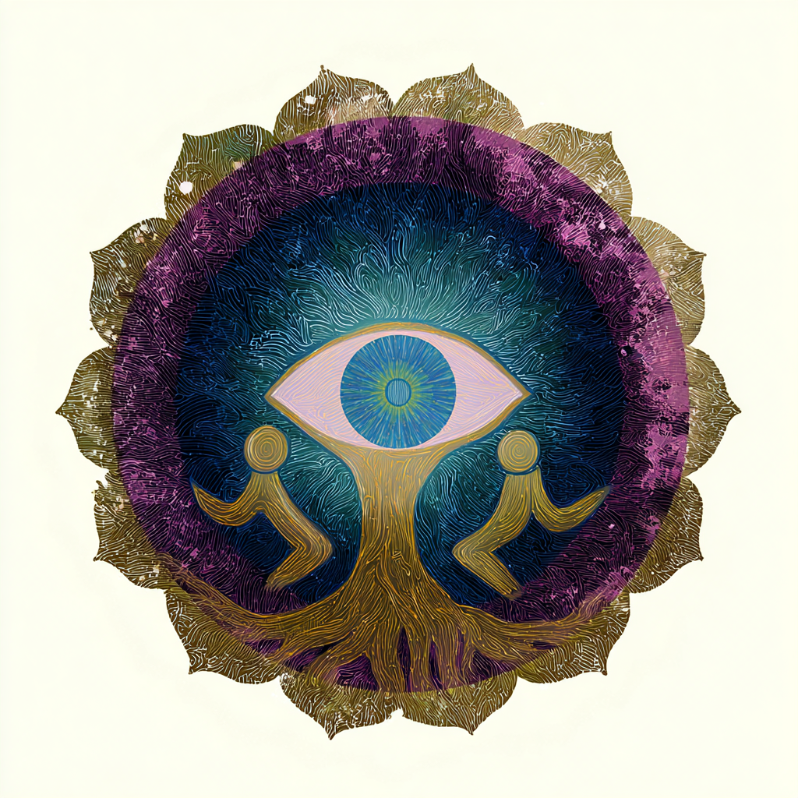
Selbsterfahrung & Heilung
Intensive innere Arbeit und transformative Prozesse
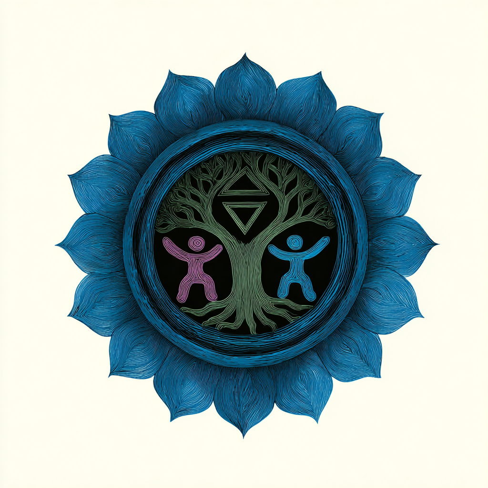
Yoga-Praxis
Verbindung von Körper, Geist und Seele
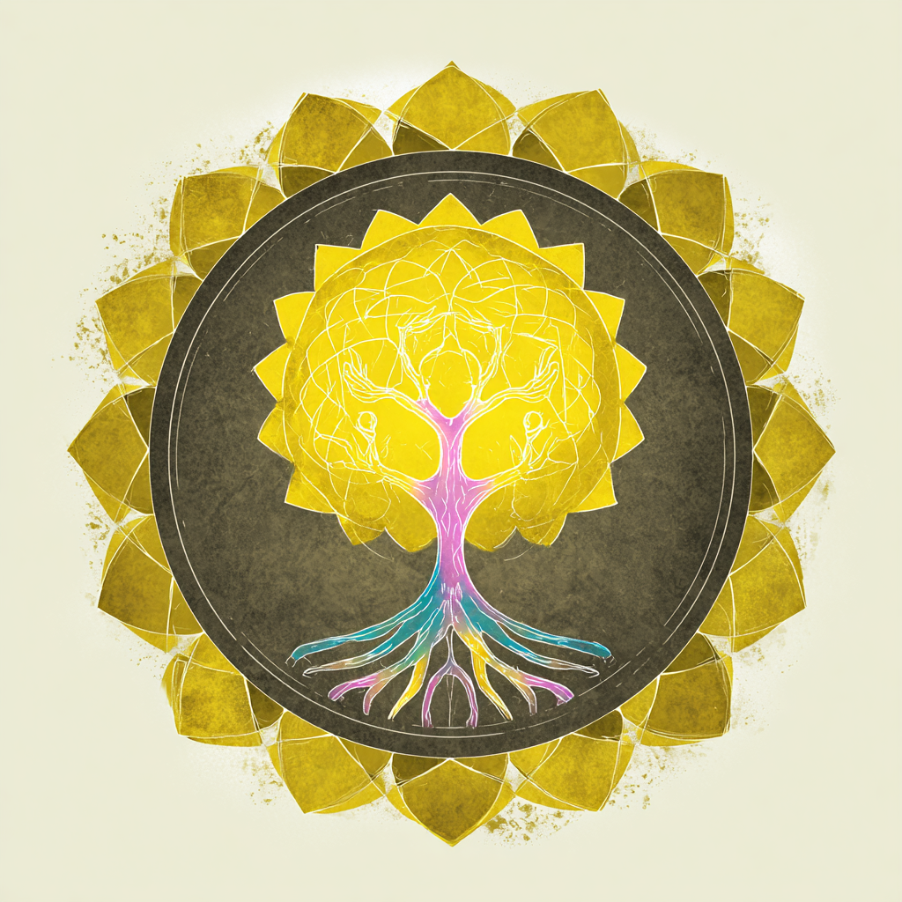
Familienaufstellung
Alte Blockaden lösen und neue Perspektiven gewinnen
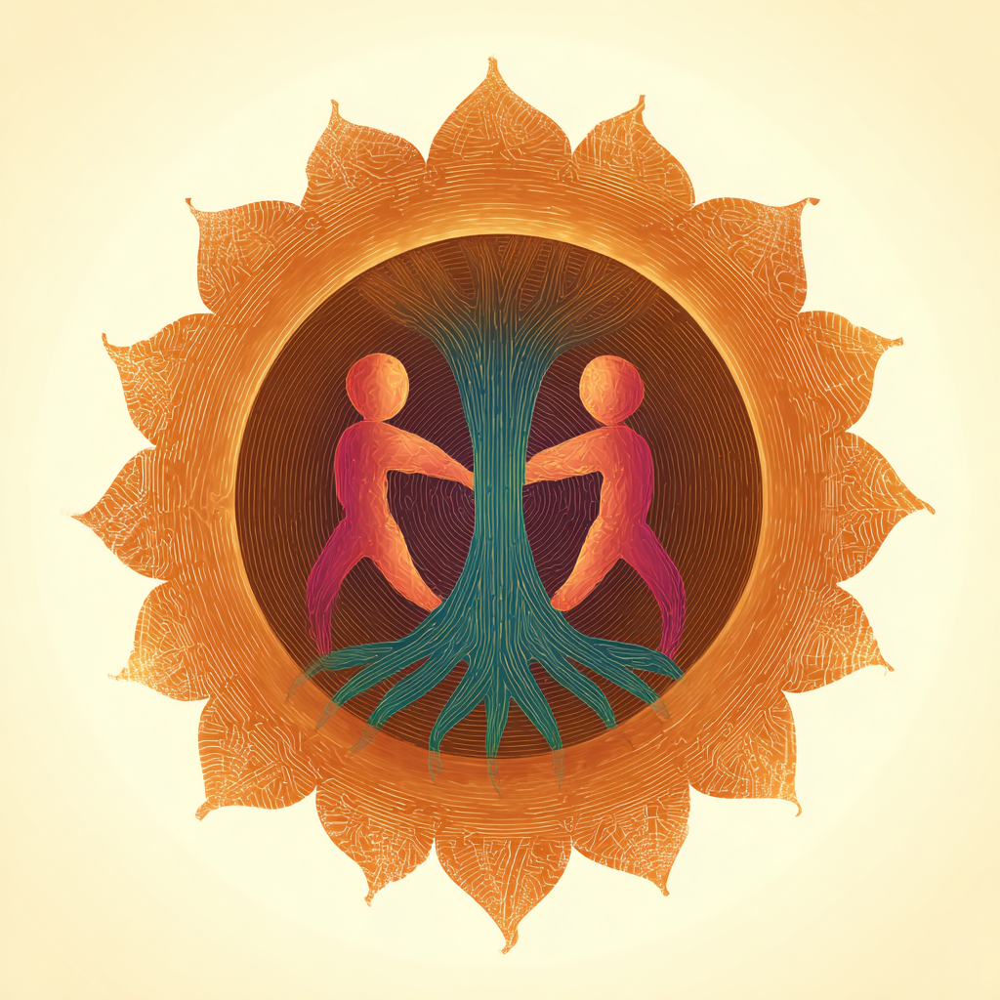
Innere Übungen
Verschiedene Methoden zur persönlichen Entwicklung
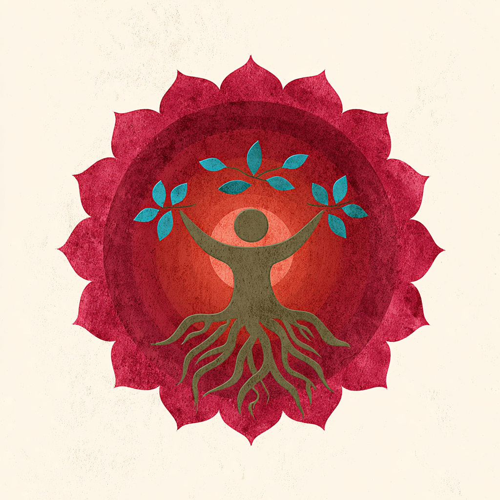
Praktische Informationen
Zeitraum
Beginn: Freitag, 27. März 2026 um 9:00 Uhr
Ende: Sonntag, 29. März 2026 um 16:00 Uhr
Kursgebühr
315 €
für alle drei Tage
inklusive Verpflegung – Hauptmahlzeiten und Pausen mit Kuchen
Übernachtung
Übernachtungsmöglichkeit nach Anfrage
Wir haben ein kleines Kontingent im Tagungszentrum reserviert
Wichtig
Teilnehmerplätze sind begrenzt!
Sichere dir jetzt deinen Platz für dieses intensive, klärendes und bereicherndes Wochenende.
Über Chaitanya
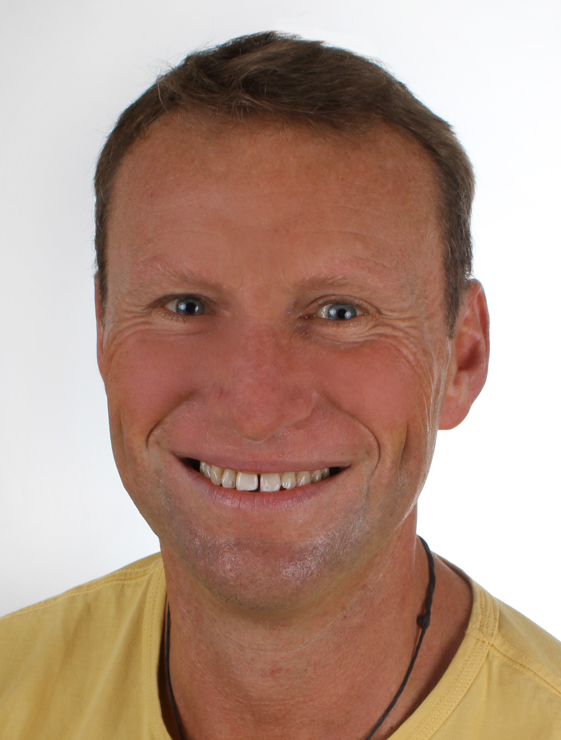
Dipl. Yogalehrer | Familien- und Aspekte-Aufsteller | Prozessarbeit & Medialität
Seit 2009 begleitet Chaitanya Menschen auf ihrem Weg zu mehr Klarheit und innerer Balance – zunächst als ausgebildeter Yogalehrer, später ergänzt durch eine Ausbildung im systemischen Familienstellen ab 2011.
Es folgte eine siebenjährige Vertiefungsphase mit einem Ashram-Aufenthalt bei Yoga Vidya Allgäu, die seinen spirituellen und beruflichen Weg nachhaltig prägte. In dieser Zeit absolvierte er Ausbildungen zum Ayurveda-Gesundheitsberater, spirituellen Lebensberater und Hypnosecoach sowie Weiterbildungen in verschiedenen Massagetechniken und als Yin Yogalehrer.
Körperarbeit, systemische Sicht und spirituelle Praxis verbinden sich heute in seinen Angeboten zu achtsamen Räumen für Heilung, persönliches Wachstum und authentisches Leben. Ab April 2026 übernimmt er das Yogastudio seiner Schwester am Kaiserstuhl.
Die Tagungsstätte
Evangelisches Tagungszentrum Bernhäuser Forst
Idyllisch gelegen in Stetten bei Echterdingen – gut erreichbar mit Auto oder öffentlichen Verkehrsmitteln.
Das Tagungszentrum bietet Weite, Freiheit und Gastfreundschaft mit Blick auf die Filderebene. Die Tagungsstätte verfügt über helle, moderne Räume und eine einladende Atmosphäre, die perfekt für innere Arbeit und Selbsterfahrung geeignet ist.
✓ Großzügige, helle Tagungsräume
✓ FilderLounge mit Sofalandschaft
✓ Terrassen und Liegestuhl-Wiese
✓ Regionale, saisonale Verpflegung
✓ Nahegelegenes Siebenmühlental im Naturpark Schönbuch
Adresse:
Dr.-Manfred-Müller-Straße 4
70794 Filderstadt
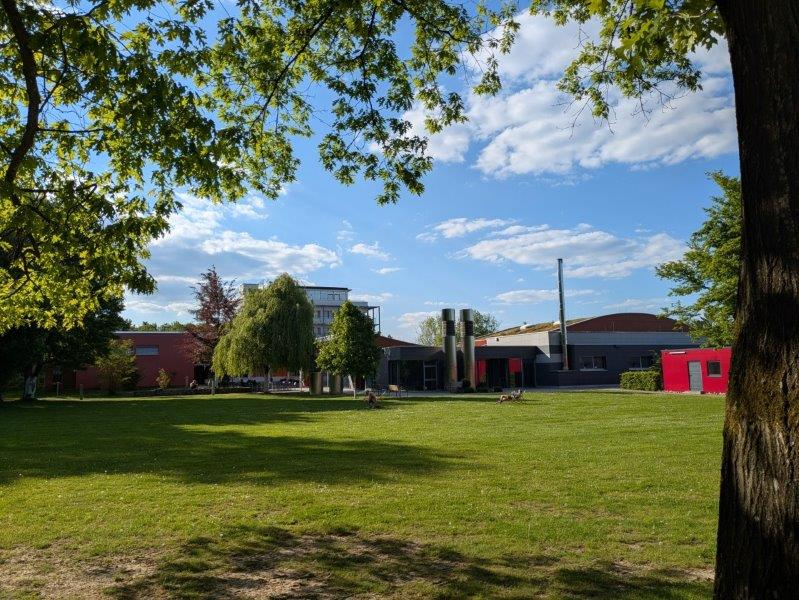
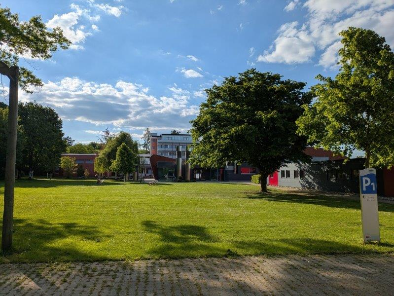
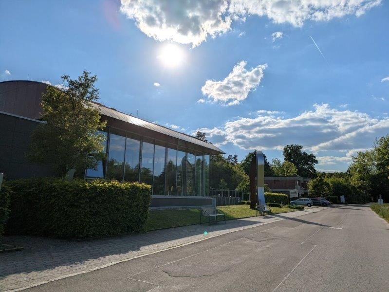
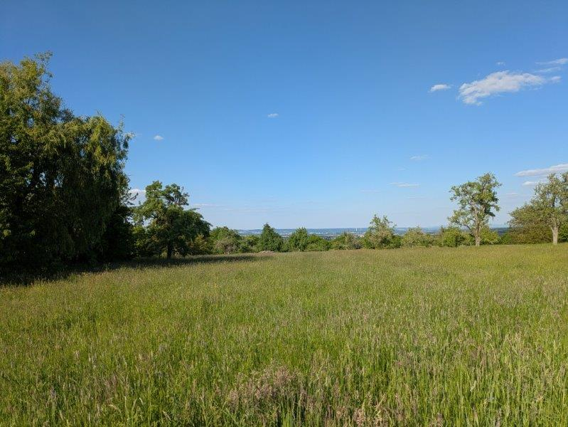
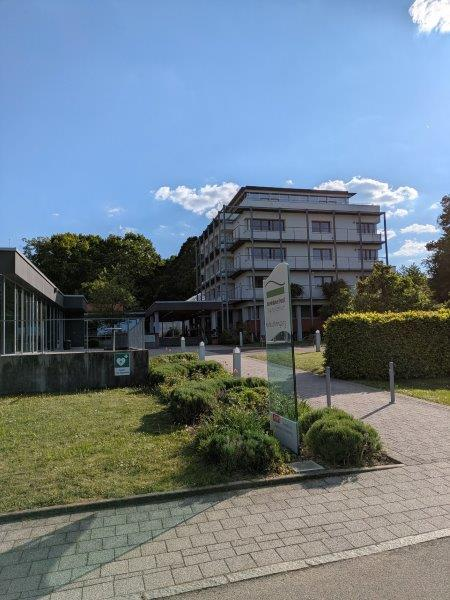
Anmeldung & Kontakt
Wir freuen uns darauf, dich bei diesem transformierenden und inspirierenden Wochenende willkommen zu heißen!
Online anmelden
Hinweis: Die Online-Anmeldung mit Kreditkarte (Stripe) und PayPal wird in Kürze freigeschaltet. Bitte schreibe uns vorerst eine E-Mail (siehe unten).
Organisiert von Monika und Daniel
Für Fragen oder Anmeldung per E-Mail:
aufstellung@mein-enneagramm-coach.deWas sind eigentlich Aufstellungen?
Familienaufstellung ist eine kraftvolle Methode der Systemischen Therapie, die verborgene Dynamiken und Verstrickungen innerhalb von Familiensystemen sichtbar macht.
Die Methode
In einer Aufstellung werden Familienangehörige oder wichtige Personen durch Stellvertreter im Raum positioniert. Durch diese räumliche Darstellung werden unbewusste Beziehungsmuster, alte Konflikte und systemische Verstrickungen erfahrbar und können gelöst werden.
Der Prozess
Die Stellvertreter nehmen oft erstaunlich präzise Gefühle und Körperempfindungen wahr, die den tatsächlichen Familienmitgliedern entsprechen. Durch behutsame Intervention und Neupositionierung können heilsame Lösungen entstehen.
Die Wirkung
Aufstellungen können helfen, wiederkehrende Muster zu durchbrechen, belastende Gefühle zu verstehen, Frieden mit der Herkunftsfamilie zu schließen und den eigenen Platz im Leben zu finden. Die Auswirkungen sind oft tiefgreifend und nachhaltig.
Für wen geeignet?
Familienaufstellungen können bei vielfältigen Themen unterstützen: wiederkehrende Beziehungsprobleme, berufliche Blockaden, unklare Lebenssituationen, Verlusterfahrungen oder dem Wunsch nach tieferem Verständnis der eigenen Familiengeschichte.
Wichtig zu wissen: Du kannst als aktiver Aufsteller mit einem eigenen Anliegen teilnehmen oder als Stellvertreter andere unterstützen. Beides ist wertvoll – als Stellvertreter sammelst du wertvolle Erfahrungen und profitierst ebenfalls von der heilsamen Energie des Prozesses.